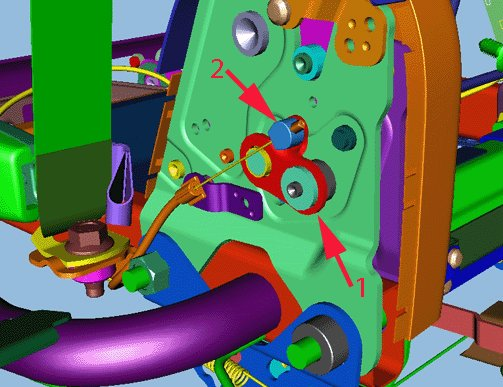
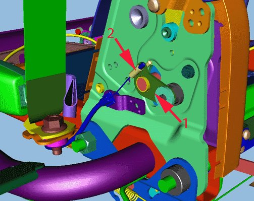
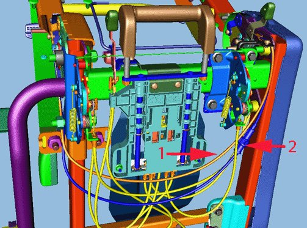
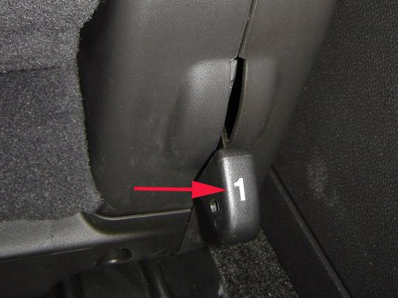
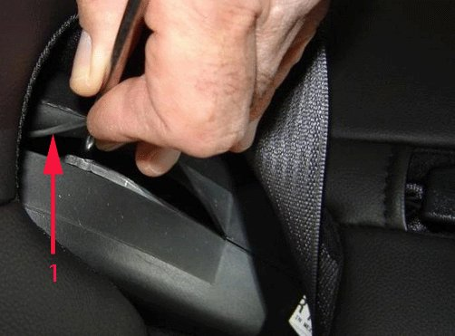
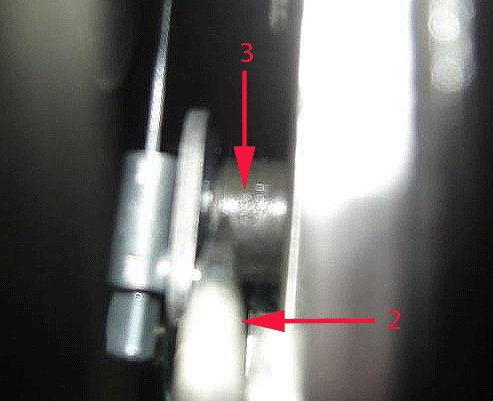

Condition/Cause/Correction # 6
Condition 6Right seat back will not lower / High effort to raise seat back / Right seat latch recliner may not disengage (AS3 Only).
Cause 6
This condition may be caused by one or more of the following conditions:
- Seat back cushion recliner latch cable may have too much slack in the cable.
- Excessive friction between the pawl and sector inside the inboard seat back recliner latch assembly.
Correction 6
Inspect the right seat inboard recliner latch cable for proper adjustment and inspect the latch for excessive friction or binding. Adjust or replace components as appropriate.

First design right seat inboard recliner latch and cable shown. Note design of release lever (1) and cable end (2).

Second design right seat inboard recliner latch and cable shown. Note design of release lever (1) and cable end (2).

The first design right seat inboard recliner latch and cable were used in 2007-2008. The first design inboard recliner latch cable (1) is not adjustable. The second design inboard recliner latch cable (2) is adjustable.
Note
If the vehicle is equipped with the first design parts, and the reclined latch or cable need replacement, they must both be replaced with the second design parts.

1. Using the seat back release lever #1, attempt to lower the seat back.
2. If the seat back cannot be lowered, or binds while lowering, perform the following steps to lower the seat back:

1. Reaching over the seat back, carefully lift the rubber seal portion (1) of the inboard recliner latch trim cover to access the latch release.

2. Using a long flat-blade screwdriver (2), press downward on the inboard latch release bar (3).
3. While depressing the inboard latch release bar, using foot behind seat, lift the seat back release lever #1, and lower the seat back.
3. With the seat back lowered, remove the seat. Using seat removal handle #3 only, pull straight rearward (do not lift) to slide the seat back and remove.
4. If the seat cannot be removed, refer to Condition 5 in this bulletin.
5. Place the seat assembly on a clean workbench.
6. If equipped with the first design inboard recliner system (shown above), and if the inboard recliner latch will not release using the seat back release lever #1, the both the inboard recliner latch and latch cable need to be replaced with the second design parts.
1. Remove the inboard recliner seat back latch. Refer to rear Seat Inner Recliner Replacement in SI.
Tip
The recliner latch bolts are self tapping.
2. Install the inboard recliner seat back latch and tighten the bolts.
Tighten
Tighten all of the seat recliner bolts to 50 Nm (37 lb ft).
3. Replace the seat back cushion recliner latch cable with the new design cable (2). Refer to rear Seat Back Cushion Latch Cable Replacement in SI.
4. Following the latch and cable replacement, perform the following steps to ensure proper operation is restored.
7. If equipped with the second design inboard recliner system (shown above), inspect the inboard latch release cable (2) for proper adjustment:
1. Remove the seat lower trim panels. Refer to Rear Seat Number 2 Cushion Panel Replacement in SI.
2. Release the inboard recliner latch cable adjustment lock button.
3. Manually cycle the inboard and outboard recliner latches to raise and lower the seat back.
4. Ensure the seat back is in the fully raised position and ensure the latches are fully latched.
5. Press in to secure the inboard recliner latch cable adjustment lock button.
6. Using seat back release lever #1, attempt to lower the seat back.
8. If the seat back will still not lower properly, remove and inspect the inboard recliner latch for excessive friction or binding.
9. If the inboard recliner latch does not show any signs of excessive friction or binding, replace the recliner latch cable with a new cable. Refer to Rear Seat Back Cushion Latch Cable Replacement in SI.
10. Adjust the new cable:
1. Ensure the inboard recliner latch cable adjustment lock button is released, or pulled out.
2. Manually cycle the inboard and outboard recliner latches to raise and lower the seat back.
3. Ensure the seat back is in the fully raised position and ensure the latches are fully latched.
4. Press in to secure the inboard recliner latch cable adjustment lock button.
5. Using seat back release lever #1, attempt to lower the seat back.
11. If the inboard latch does show signs of excessive friction or binding, replace the inboard latch using the following steps:
Important
Manually locking the recliner latches will allow the seat back to be folded up and down during repair.
1. Remove the inboard recliner seat back latch. Refer to rear Seat Inner Recliner Replacement in SI.
Tip
The recliner latch bolts are self tapping.
2. Install the inboard recliner seat back latch and tighten the bolts.
Tighten
Tighten all of the seat recliner bolts to 50 Nm (37 lb ft).
3. Adjust the recliner latch cable. Refer to step 10 above "Adjust the new cable."
Important
The seat back must be in the lowered position before pulling out the center rear seat latch release handle.
4. Install the left rear seat latch release knob and the two 30 mm TORX screws.
Tighten
Tighten the screws to 2 Nm (18 lb in).
Important
For 2007-2008 vehicles, the redesign for the new replacement inboard recliner seat back latch included the elimination of three holes from the original latch, which accepted screws for securing the inboard trim covers. When installing the trim covers to the new seat back latch, the covers will snap together then the one remaining screw location will be used to secure the covers to the latch. Discard the three extra screws.
5. Install the center rear seat latch release handle and the two nuts. Refer to Seat Latch Release Handle Replacement in SI.
Important
The seat back cannot be raised or folded unless properly secured to the floor first.
6. Install the third row passenger seat assembly back into the vehicle. Using two hands on the seat (not the handle) roll the seat into position and allow the front latches to drop securely into place, just under the weight of the seat itself. Press down firmly on the top rear of the seat to ensure the rear latches are fully secured.
Important
If the seat back locks down in the fold position and will not release to the upright position, the recliner latch cable may need to be readjusted. Refer back to Step 10 "Adjust the new cable."
7. Using the seat back release lever #1, cycle the seat back ten complete times to wear in the recliner latch sector and pawl.
8. Remove the seat from the vehicle. With the seat back lowered, using seat removal handle #3 Only, pull straight rearward (do not lift) to slide seat back and remove.
9. Install the third row passenger seat back into the vehicle. Using two hands on seat (not handle) roll seat into position and allow the front latches to drop and secure into place, just under the weight of the seat itself. Press down firmly on top rear of seat to ensure rear latches are fully secured.
10. Verify that the condition has been corrected.